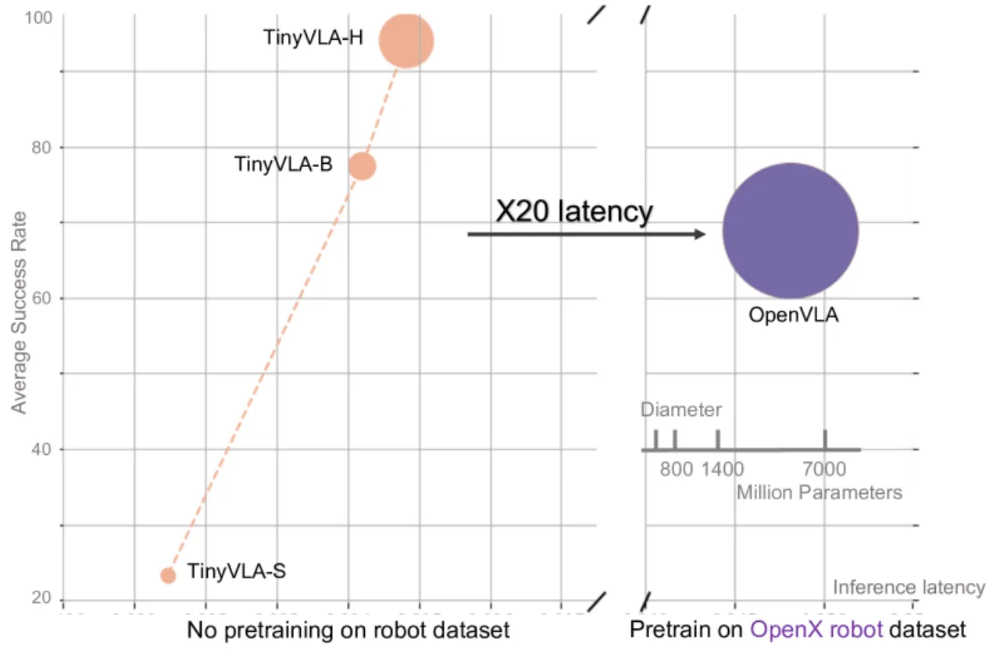
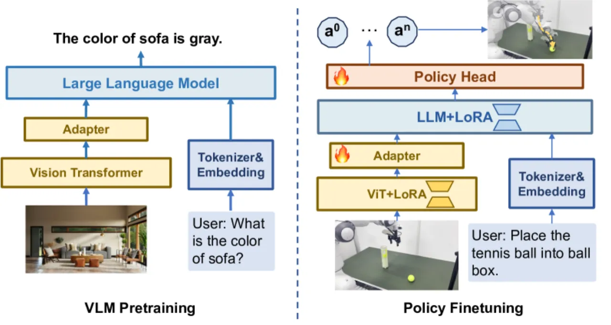
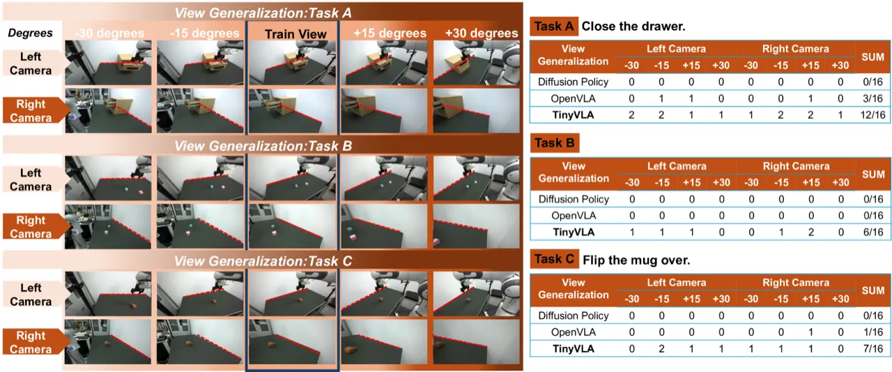
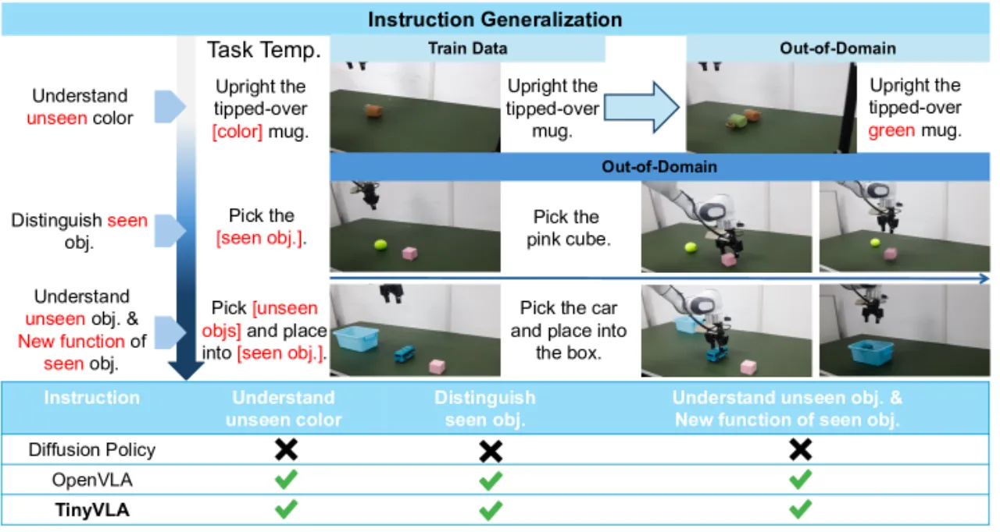
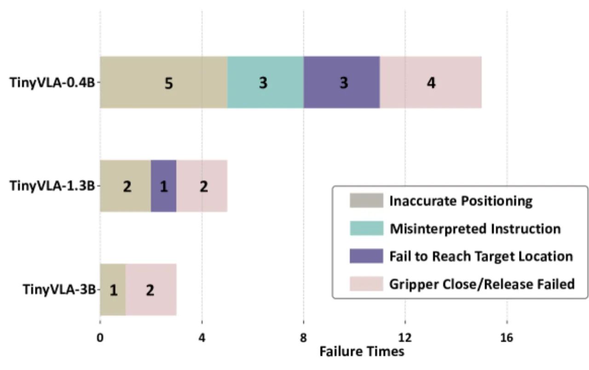

TinyVLA 采用轻量级视觉语言模型（70M–1.4B 参数）结合 Diffusion Policy 解码器，彻底摆脱了大规模机器人预训练数据集的依赖，同时将推理延迟压缩至 OpenVLA 的 1/20，在真实机器人操作任务上平均成功率超越 OpenVLA 达 25.7 个百分点。
现有 VLA 模型（如 OpenVLA）存在两大核心瓶颈：其一，需要在包含 970K 条样本的大规模机器人数据集上进行耗时预训练；其二，基于 7B+ 参数语言模型的自回归 token 生成导致推理延迟高达 292ms，无法满足实时控制需求。
"Our framework achieves faster inference speeds, and improved data efficiency, eliminating the need for pre-training stage."

TinyVLA 由三部分组成：（1）预训练的紧凑型 VLM 骨干（70M–1.4B 参数，基于 LLaVA 管线 + Pythia 语言后端）；（2）LoRA 参数高效微调；（3）Diffusion Policy 动作解码器。整个框架无需机器人数据预训练，直接在少量示范数据上端到端微调。

作者选用参数量在 70M–1.4B 之间的小型视觉语言模型，通过 LLaVA 训练管线将视觉编码器与 Pythia 语言模型对齐。这使得 TinyVLA 在保留语言理解和视觉感知能力的同时，将参数规模压缩为 OpenVLA（7B）的约 1/5。
在机器人数据微调阶段，作者采用 LoRA（Low-Rank Adaptation），将低秩矩阵注入 Transformer 的 Q、K、V attention 层。文中指出 "trainable parameters constitute only 5.0% of the entire transformer's parameters"，大幅降低计算开销。
动作生成不再依赖自回归离散 token，而是通过 Diffusion Policy 头部预测噪声、迭代去噪得到连续动作序列。这一设计同时带来两项优势：避免了大词表 softmax 的计算瓶颈，且连续动作表示天然适合精细的机械臂控制任务。
每个任务仅需 100 条演示轨迹（5 个任务共 500 条），无需 OpenVLA 所需的 970K 条大规模预训练数据，即可达到甚至超越其性能。
直接使用公开发布的多模态预训练 VLM 权重作为初始化，省去机器人专属预训练阶段，显著降低部署门槛。
实验涵盖真实世界单臂 Franka 机械臂（5 个操作任务）、双臂 UR5（3 个任务）及 MetaWorld 仿真环境（50 个任务）。基线模型包括 OpenVLA-7B 和 Diffusion Policy。
| 模型 | PlaceTennis | FlipMug | StackCubes | CloseDrawer | OpenBox | 平均 |
|---|---|---|---|---|---|---|
| TinyVLA-H | 90.0% | 98.3% | 98.3% | 96.7% | 86.7% | 94.0% |
| OpenVLA | 83.3% | 51.7% | 40.0% | 85.0% | 81.7% | 68.3% |
| Diffusion Policy | 16.7% | 30.0% | 3.3% | 73.3% | 53.3% | 35.3% |
TinyVLA-H 平均成功率 94.0%，比 OpenVLA（68.3%）高出 25.7%，同时使用参数量少 5.5 倍。
| 模型 | 推理延迟（ms） | 相对 OpenVLA 加速 |
|---|---|---|
| OpenVLA-7B | 292 | 1×（基准） |
| OpenVLA（换 1B 骨干） | 140 | ~2× |
| TinyVLA-H | 14 | ~20× |

在双臂 UR5 平台上，TinyVLA-H 平均成功率为 44.5%，OpenVLA 为 0%（完全失败），原因是 OpenVLA 的预训练数据仅覆盖单臂场景，无法泛化至双臂操作。


动作解码器消融（Table V）显示：MLP 解码器在全部 5 个任务上均为 0% 成功率；Action Chunking Transformer 平均约 11.6%；Diffusion Policy 解码器达到 94.0%，表明连续扩散动作建模对于精细操作至关重要。
TinyVLA-H 平均成功率 31.6%，Diffusion Policy 基线为 10.5%；在困难任务上，TinyVLA-H 的表现约为基线的 6 倍（"sixfold better"）。
作者在空间泛化实验中明确指出："OpenVLA performs slightly better than our approach, likely because it is trained on large-scale robotic data, allowing the model to 'see' more diverse robot actions during pre-training。" 当测试位置严重偏离训练分布时，TinyVLA 相比经过大规模预训练的 OpenVLA 存在一定劣势。
虽然 TinyVLA-H 整体推理延迟仅 14ms，但文中 Table IV 暗示：若将 OpenVLA 的 7B 骨干替换为同等参数量的 1B 骨干，延迟从 292ms 降至 140ms（约 2×），而 TinyVLA-H 达到 14ms 的原因不仅在于骨干更小，还来自于 Diffusion Policy 自身的迭代去噪步数设置。在实时控制频率更高的场景下，去噪步数与延迟的权衡尚未充分讨论。
尽管 TinyVLA 消除了大规模机器人预训练的需求，但每个新任务仍需收集约 100 条高质量演示轨迹。对于无法轻松采集人工示范的场景（如危险环境、远程操作），数据采集本身仍是瓶颈。